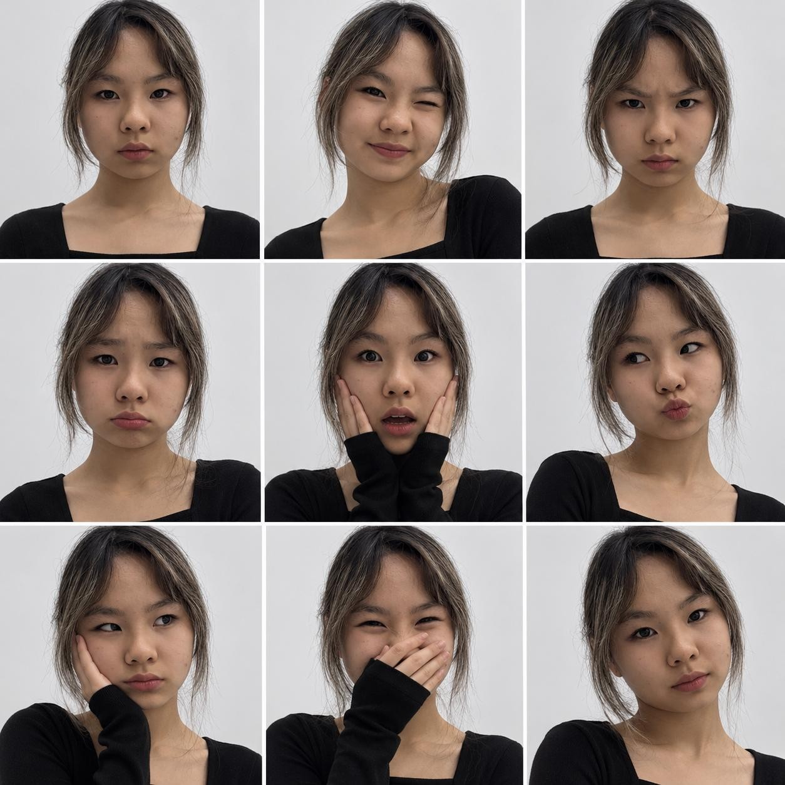

Привет! Я Айару.
Я юная актриса и певица из Алматы. Профессионально занимаюсь актёрским мастерством и вокалом, снимаюсь в художественном кино, телесериалах и рекламных роликах.
Недавно я сыграла драматическую роль дочери убитой в историческом сериале «Было дело» (70-е годы, серия «Холодное блюдо»), а также главные детские роли в рекламе «Хрум», «Central Dent Clinic» и «Білімді бол».
В свободное время я пою, играю на домбыре, фортепиано, гитаре и укулеле, рисую, создаю оригами из бумаги и изучаю иностранные языки. Буду рада новым интересным ролям и кинопроектам!
Имя
Абдолла Айару
Дата рождения
30 июля 2014 (12 лет)
Рост
157 см
Город
Алматы, Казахстан
Языки
Казахский (родной) · Русский (свободно) · Английский
Инструменты
Домбыра · Фортепиано · Гитара · Укулеле
Хобби и творчество
Пение (эстрадный и народный вокал) · Домбыра · Фортепиано · Гитара · Укулеле · Рисование · Рукоделие (поделки из бумаги, оригами) · Изучение иностранных языков
Курсы и обучение
Актёрское мастерство · Вокал · Домбыра · Фортепиано · Английский язык · Математика

